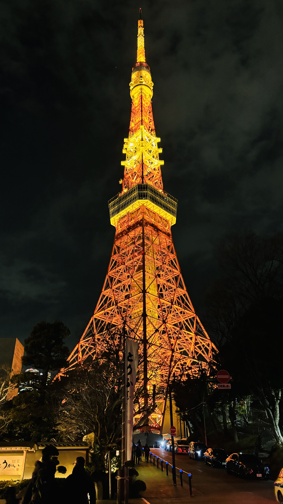
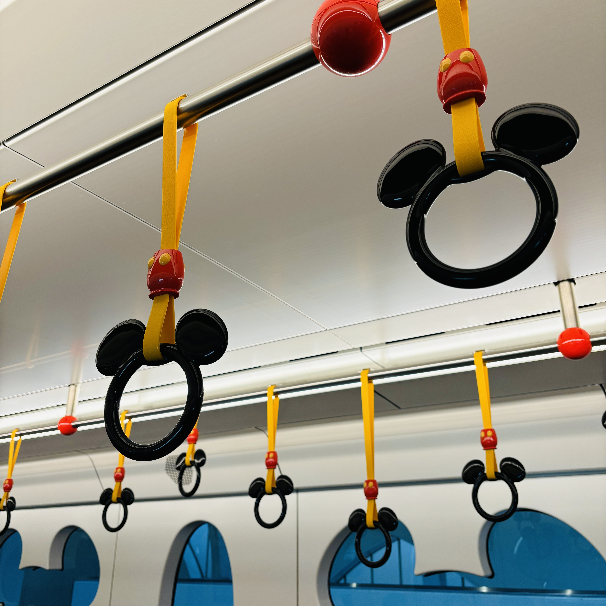

도쿄


도쿄는 일본의 수도로, 전통과 현대가 공존하는 매력적인 도시입니다.
다양한 볼거리와 먹거리가 가득해 여행지로 많은 사랑을 받고 있습니다.
가볼만한 곳

1. 디즈니씨
디즈니씨는 디즈니를 테마로 한 놀이공원으로 바다 옆에 있어서 디즈니씨라는 이름이 붙었습니다. 디즈니씨에서는 '라푼젤', '토이스토리' 등을 모티브로 한 다양한 어트랙션을 즐길 수 있으며, 디즈니 캐릭터 모양의 다양한 먹거리도 즐길 수 있습니다.
디즈니씨 가까이에는 디즈니랜드도 있는데, 디즈니랜드는 어린이들을 위한 어트랙션이 조금 더 다양하고, 디즈니에 등장하는 공주님들을 직접 만날 기회도 주어집니다.

2. 해리포터 스튜디오
해리포터 스튜디오는 해리포터 팬이라면 꼭 가봐야 하는 곳입니다. 해리포터에 등장했던 다양한 마법 용품과 공간들을 재현해 놓았으며, 등장인물들이 입었던 의상이나 촬영 비하인드도 알 수 있습니다. 또한, 다양한 해리포터 굿즈들도 얻을 수 있습니다.
3. 가마쿠라
가마쿠라는 도쿄 인근의 소도시입니다. 가마쿠라에서는 한적한 일본 풍경을 즐길 수 있으며, 바다도 볼 수 있습니다.